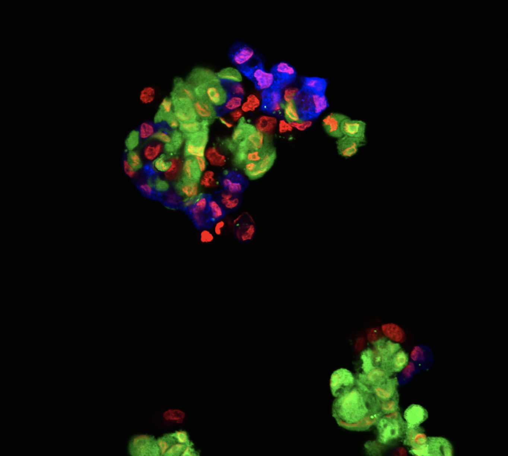

Cancer cell resistance poses a particularly significant challenge for the treatment of cancer.
Multiple factors are involved in the conferral of drug resistance to a growing tumor. Many
changes occur within a cancer cell that confer upon them resistance including altered metabolism,
decreased drug uptake, increased drug efflux, and alterations in membrane receptors (e.g. Androgen
receptors). The effect of a heterogenous tumor microenvironment is also involved in this drug
resistant property exhibited by cancer cells. In this study, I formulated and planned a thorough
research project that evaluated how cancer cell spheroids responded to Docetaxel, Cabazitaxel ,
and TRAIL in an effort to see how fibroblasts conferred drug resistance to cancer cells. During
this 3 month long project, I independently:
- Produced 3D spheroid co-cultures
- Treated the spheroid co-cultures with Docetaxel, Cabazitaxel , and TRAIL
- Imaged the spheroids using fluorescence and brightfield microscopy (see picture)
- Analyzed the spheroids using imageJ software
- Performed and analyzed flow cytometric data on the spheroids
King Lab Alumni